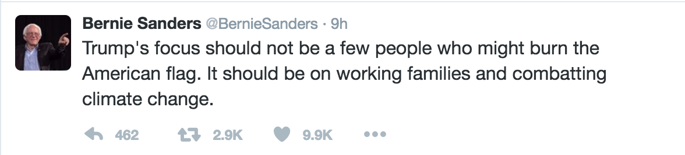
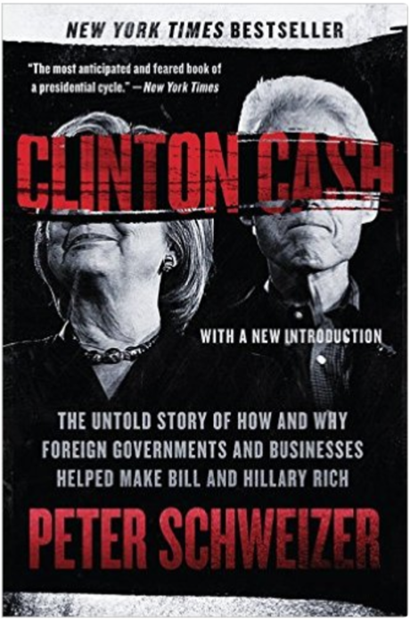
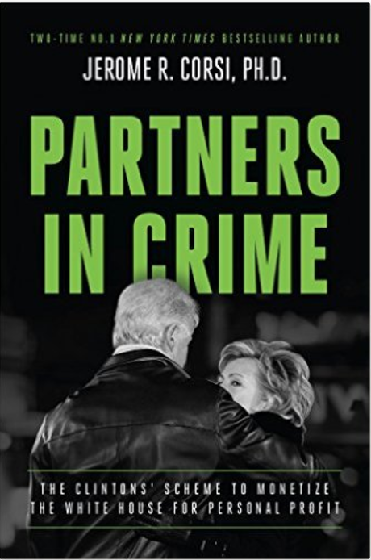
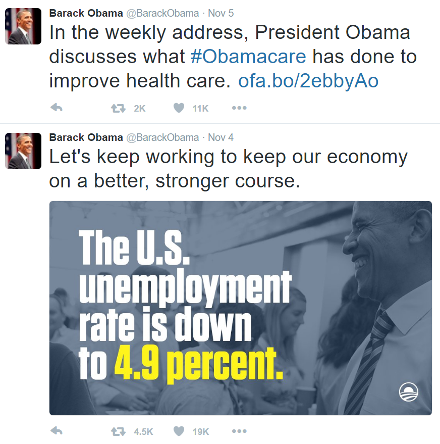
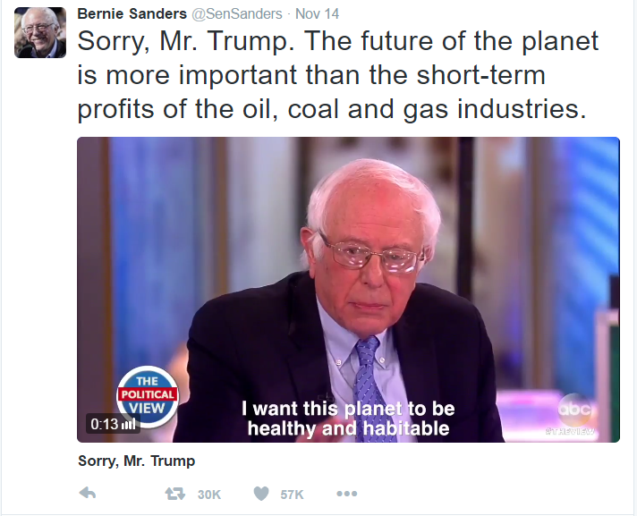

@BrittPettibone pic.twitter.com/0uITE6ezo8
— Brian Cox (@BrianCox_gab_ai) December 15, 2016
Versions:2016-05-28 2016-06-08 2016-06-17 2016-06-27 2016-07-06 2016-07-16 2016-07-26 2016-09-18 2016-09-29 2016-10-13 2016-10-29 2016-11-16 2016-11-27 2016-12-08 2016-12-15 2017-03-08
2016.12.15
是谁黑了希拉里的 email，貌似快要真相大白了……
2016.12.14
Google 总裁 Eric Schmidt 的 email 惊现在 WikiLeaks！这是他在 2014 年给希拉竞选团队设计的一个详细的策略。大家可以去瞻仰一下大师计划的风采：使用手机，email 等信息来追踪选民，追踪分析谣言的来源和影响力，使用大数据对选民进行 “rank” 和优化…… 计划了这么多，最后希拉里还是被 YouTube 给打败了 :P
The tech exec at Trump's roundtable who authored Clinton strategy 30 months before election https://t.co/LskJODXyXn pic.twitter.com/YgAALQUcOF
— WikiLeaks (@wikileaks) December 15, 2016
2016.12.14
俄罗斯 RT 电视台，实地进入叙利亚的独立记者，跟一个美国 The Hill 的记者争论关于 Aleppo 的真相和主流媒体的问题。从这个视频，你也许能看出来美国主流媒体常用口头禅和诡辩伎俩。(视频)
2016.12.14
2016.12.14
克林顿的政治顾问 Naomi Wolf 写了一本书，叫『The End of America』，解释为什么美国正在一步步的走过当年纳粹德国的老路。她总结出一个民主的国家被转变为一个法西斯暴政，需要经过的十个步骤。我感觉作者有一定的党派偏向性，所有坏的例子似乎都指向共和党，对希拉里居然有正面评价。然而她指出的这十个步骤，不管哪个党执政的时候都存在。你也许会惊讶的发现，美国已经快要走完所有这些步骤，世界正处于第三次世界大战的边沿…… (演讲视频)
2016.12.14
建议大家都看一下这个对叙利亚总统 Assad 的采访。他不但解释了叙利亚政府的行为，而且指出了西方媒体，美国政府的邪恶作为。美国及其盟友其实在背后支持着恐怖分子。现在美国主流媒体正在大幅度的失去人们的信任，而 Assad 的谈话进一步的确认了西方媒体歪曲事实的丑恶嘴脸。
2016.12.14
有充分的证据显示，希拉里和民主党的 email 是 NSA 的人黑掉的。很明显嘛，美国十几个情报机构里面，只有 NSA 有这样的技术和设施，可以窃听任何人的网络和电话通信，所以得到任何人的 email 都是易如反掌。全美国的网络路由器里面都被 NSA 安装了追踪设备，如果俄国人黑了那些 email，NSA 肯定早就发现了。其实是有的 NSA 的情报人员早就已经对希拉里不满了，因为希拉里的腐败，导致他们的同伴送命，将来自己的生命也会受到威胁。这些人不想让希拉里成为他们的老板，所以他们不惜“违反法律”来阻止她。所以他们把她的 email 截获了，利用 WikiLeaks 公开出来。邪恶的政府用来监视和控制人民的工具，到头来被用到了他们自己身上，真是太好玩了！
2016.12.13
叙利亚政府军从恐怖分子手中解放了叙利亚第一大城市 Aleppo，然后各大主流媒体就开始制造假新闻，拿出不知道什么电影里剪下来的镜头，说政府军胡乱轰炸，杀死了许多平民。然而事实却正好相反，占领 Aleppo 的恐怖分子把这些平民作为人质困在那里作为“人肉盾牌”（human shields），把食物都拿走不给他们吃。如果政府军不解放 Aleppo，他们最后将会被恐怖分子杀光或者饿死。政府军已经尽可能去保护平民，被解放的平民都在欢呼和感谢。为了不伤害混杂在里面的平民，政府军还不得不放走了一些恐怖分子。为什么美国媒体总是倾向于对恐怖分子有利的一方？为什么总是在这种时候制造假新闻，片面渲染“政府军引起平民伤亡”，而不是去报道恐怖分子做的恶事？因为这些与叙利亚政府为敌的 ISIS 恐怖分子，其实就是美国政府赞助的。他们手里的先进武器，是美国政府提供的。美国政府里面某些人的阴谋是这样：搞垮伊拉克，利比亚，叙利亚，然后攻击下一个目标伊朗，另外打开国门接收恐怖分子入境，这样 ISIS 就可以一统中东，称霸世界。现在我明白了，谁是真正的恐怖分子…… 视频，电台录音，对叙利亚总统 Assad 的采访。
2016.12.13
在国土安全部（DHS）工作了 15 年的员工披露，奥巴马上台之后，命令他删除 DHS 收集到的用于追踪恐怖分子的重要数据和线索，这使得日后发现和追踪恐怖袭击异常困难。鼓励和支持非法移民，犯罪分子和恐怖分子，这样的人是怎么成为美国总统的？他还有不到一个月时间了，但我还是要说：弹劾奥巴马这个混账东西！
2016.12.13
2016.12.13
每一个阴谋在被大众公认之前，都被叫做“阴谋论”。
2016.12.12
媒体说 CIA 说俄国人黑了 email，却至今没有 CIA 的发言人出来说过话。现在发言的最多是个“前 CIA 局长”。这么大个事，现任 CIA 局长也不出来开个新闻发布会，连个采访都没有？以至于我怀疑这一切就是媒体搞的鬼，CIA 也许都没有参加这事。目的1：扰乱群众和官员视线，挑拨他们与 Trump 的关系。目的2：挑拨情报人员与 Trump 的关系。美国人学孙子兵法，真是学的不赖嘛……
2016.12.12
在这一波的政治研究之后，我终于明白为什么 Apple 不帮 FBI 解密 San Bernardino 大屠杀恐怖分子的手机了。因为现在的 FBI 其实是坏人，他们是为奥巴马，希拉里，克林顿之类的反人民势利服务的。他们借口想解密恐怖分子的 iPhone，而其实是想解密所有人的 iPhone。FBI 并不只是要求 Apple 帮他们解密那一个 iPhone，而是想要一个修改后的 iOS image，绕过锁屏密码，这样他们可以推送到任何他们想要破解的目标。如果你注意过我之前的 Tweet，就会知道 San Bernardino 恐怖大屠杀，其实是美国政府自导自演的一场骗局。这场骗局的目的之一，就是以此为借口，得到能够破解所有人 iPhone 的方法。另外一个目的就是禁枪，把武器从人民手上拿走，这样人民就不再有力量跟反动的政府对抗。
2016.12.12
谈到俄国和普京，希拉里跟他们关系要近很多。看看这个关于 Uranium One 的故事，希拉里和克林顿是如何玩弄权势，把占美国铀产量 20% 的公司卖给了俄罗斯……（科普：铀元素是制造原子弹的主要材料）
2016.12.12
威斯康辛州重新计票之后，Trump 又多出 162 票。那么之前这 162 是怎么记到希拉里头上的呢？难道是俄国黑客干的？哈哈哈！
2016.12.12
世界上有一个严重的问题，那就是很多人的脑子不是按侦探或者法官一样的逻辑工作的。当同事们聊到 CIA 报告有俄国人黑了那些 email 的时候，我说：“一个黑客偷了一个罪犯的 email 出来作为证据。你们觉得我们应该抓那个黑客，还是应该抓那个罪犯呢？”结果得到一个令我惊讶的回复：“那黑客也偷了共和党的 email，可是为什么他只曝光民主党的 email？”大家来分析一下，这个人的想法有什么问题呢？
2016.12.11
前英国大使 Craig Murray 发文证实，CIA 对俄国操控美国选举的指控，是完全没有根据的。因为他见过泄漏 email 的那些人，确实是美国情报局的内部人员。
2016.12.11
一直听说因为泄漏国家机密而被判刑 35 年的 Chelsea Manning，今天看了她泄漏出来的视频，才发现美国军队在伊拉克每天就是这样，以完全不负责任的态度射杀无辜平民，就跟打 Call of Duty 游戏一样。无语了…… 如果还不够让你痛心的话，请再看看这个，还有这个。军队对他们唯一的要求就是：杀人。不管杀什么人都行！美国军队在伊拉克杀了几百万的平民，再加上9-11的真相，你就会明白美国政府里的某些人，完全就是恶魔。
2016.12.10
诺贝尔文学奖真是发不出去了！有点正义感的作家都没人想要这个奖，只好找了一个歌手（Bob Dylan）来充数。结果人家 Bob Dylan 颁奖典礼缺席，找了个替补歌手来唱他的歌，结果唱了一半忘词儿…… 哎，好没尊严。你们发奖给人家，也要先问问人家想不想要你的奖呀！巴金先生当年拒绝诺贝尔文学奖提名，真是明智之举，不然真会被这奖的臭名所连累。奥巴马这么腐败而恶心的政客，戈尔这种撒下“全球变暖”的弥天大谎的人，居然拿了诺贝尔和平奖，这说明什么问题呢？诺贝尔奖发展到现在，已经失去了对科学和真理的尊重，甚至被用来作为政治的工具，成为邪恶势利的帮凶。这也许就是 Bob Dylan 缺席的原因，这是一种无言的鄙视 ：奖金不要白不要，我可以收着，但我不给你们唱歌！其它方面的奖项，比如物理，化学之类，显然也充满了政治斗争和勾心斗角。很多人为了拿这个奖，可真是处心积虑，失去了科学工作者应有的品质。所以诺贝尔奖其实已经开始阻碍科学的进步。亲爱的中国同胞，如果诺贝尔奖还在你心目中还有崇高地位的话，那你真应该好好反思一下了。
2016.12.10
大家应该知道华盛顿邮报的主子是谁，那就是 Amazon 的 CEO，Jeff Bezos。恶心的媒体背后，必然有恶心的老板。Amazon 的工作环境有多恶心，对员工有多残忍，大家也许都听说过了。 还不知道的人，真应该看看这篇文章，看看 Jeff Bezos 的嘴脸。我早就知道 Amazon 是一个非常邪恶的公司，所以我从来没有考虑过去 Amazon 工作，给再多的钱也不去！助纣为虐，最后害的是自己，这是我必须给大家敲响警钟的时候了。
2016.12.10
华盛顿邮报报道说，有不透露姓名的 CIA 官员，秘密在背后告诉他们，是俄国人帮 Trump 黑了希拉里和民主党的 email。先不说这 email 是不是俄国人偷的，只问你自己一个很简单的问题：如果一个黑客偷了一个杀人狂的 email，把它提交给法庭作为证据，我们应该抓这个黑客还是这个杀人狂？我觉得我们应该感谢这个黑客才对。另外，凡事都得有证据。没有任何证据拿得出来，连 CIA 官员的姓名都不敢公开，这不是制造谣言是什么？如果 CIA 真有证据说明是俄国人黑了这些 email，他们应该首先把证据提交给国会，进行调查。现在的情况是国会没有收到任何信息，CIA 局长没出来说话，反而是华盛顿邮报爆出这些来源不明内容，这不是很诡异吗？华盛顿邮报发表这样完全没有根据的文章，已经违反了作为一个新闻机构的基本原则，完完全全的沦为了制造假新闻的婊子。到底是谁黑了这些 email，请看这里。其实是美国情报人员自己干的。很多有良心的情报人员，早已看不惯 20 多年以来历届美国政府的腐败，所以决定联合起来，阻止希拉里成为总统。曝光希拉里和民主党的 email，是其中一个部分。如果你没做亏心事，也不用怕别人曝光你的 email，对不对？美国政府和媒体的这种举动，正好说明这些 email 的内容是真的，它们显示出希拉里和民主党的严重腐败。退一万步说，就算是俄国人黑了这些 email 出来，那也算帮助美国人民认清了这些恶心的政客们的本质。美国人民还没有意识到，希拉里和 CIA 才是真正的敌人。
2016.12.09
Trump 选的劳动部长 Andrew Puzder 开的汉堡店，喜欢请比基尼美女打广告，结果就被媒体叫做 misogynist（厌恶女人的人）。不对呀，这应该是喜欢（而不是厌恶）女人的人干的事情吧？哪个正常男人不喜欢比基尼美女。左派媒体已经左到这种程度了，照他们这样说，所有正常男人都是 misogynist 了 :P
Trump’s labor secretary pick is a gross misogynist, really into hot women in bikinis: https://t.co/XJdBUN3GvU pic.twitter.com/3JffWZU4JQ
— Slate (@Slate) December 10, 2016
2016.12.09
“副总统，那架飞机离我们 30 分钟，还是保持原来的命令吗？” …… “飞机离我们 20 分钟，还是保持原来的命令吗？”…… “飞机离我们只有 10 分钟了，还是保持原来的命令吗？”…… 这命令是什么，居然猜不出来…… 美国国防部的人到底是智商不行，还是故意装傻？视频
2016.12.09
Trump 又招走了一个 Goldman Sachs 的人，这样 Goldman Sachs 就可以倒闭了吗？……
2016.12.09
这个视频号称是 9-11 的终极答案。飞机撞了哪些位置，为什么要撞那里，是哪些公司被毁灭了，为什么要毁灭他们，幕后操纵者是谁，他们之间的关系，动机，全都解释了一下。也许是巧合，因为那楼上什么机构都有，但看起来是经过了非常深入的调查……
2016.12.09
有个人说得好，CNN, 华盛顿邮报之类的报纸和电视台，本来都快被互联网给挤垮了，现在他们还明目张胆地歪曲事实，所以离寿终正寝应该已经不远了。美国的传统媒体，目前就看 Fox News （共和党控制的）还可以，其它的都不想看了。Breitbart 是往另外一边偏的，有点太煽仇恨了。WND 好一些。Judicial Watch 貌似还比较中立，不算媒体就是。InfoWars 有一些很好的信息，虽然还是有不对的东西，小心点就好。
2016.12.09
看了这个当时在世贸大厦 Merrill Lynch 上班的，幸免于难的 9-11 目击证人的口述，详细讲述了那天他遭遇的一切，再次肯定了这里面的真相。其中最奇怪的事情是，在 9-11 之前的一个星期，Merrill Lynch 突然对员工进行了一次非常严格的“逃生训练”，带领大家沿着 9-11 那天需要逃跑的路线走了一趟，…… 懂了吧？
2016.12.07
2016.12.07
希拉里的竞选策略：把选民的心中充满（对 Trump 的）仇恨和恐惧，这样你就可以操纵他们去做任何事情。说 Trump 煽动仇恨，其实他们才在煽动仇恨。
2016.12.07
一群以 Michael Moore 为代表的暴民，策划在 Trump 上任典礼的时候进行骚乱，还说为了保障这些人的“言论自由”，不准维持秩序的警察和士兵带枪。这就是所谓“文明社会”？我觉得应该把坦克准备好！这帮美国的败类真是什么事都干得出来。默默祝福 Trump 一路平安！
Disrupt the Inauguration. The Majority have spoken - by nearly 2.7 million votes &counting! Silence is not an option https://t.co/HSmP3pREvy
— Michael Moore (@MMFlint) December 7, 2016
2016.12.07
Assange 原来是这样被陷害的。一妹纸把他请到家，结果一夜五次，最后那次被告强奸，就因为妹纸可能没睡醒，没有明确表示“同意”…… 这也太滑稽了。这样说来大家都强奸过了。哈哈哈！我早就说过，告人强奸是最好的诬告手段嘛。
New SMS records show Assange was framed by police in 1st sex case: https://t.co/MqwZAvH0va and in 2nd case: https://t.co/OPCFRveUqM pic.twitter.com/SdI7rY0Cdp
— WikiLeaks (@wikileaks) December 7, 2016
2016.12.06
Newsweek 报道 Assange 的状况，把他比喻为“The Man In the High Castle”。瑞典警方竟然是指使人来诬告 Assange，这个号称社会主义，人权和高幸福指数的国家，真是把脸都丢尽了。看来是时候把 The Man In the High Castle 拿出来看看了，表现的简直就是希拉里上台之后美国的未来嘛 :)

2016.12.06
原来 Colbert Report 也是被民主党收买了的。早就看 Stephen Colbert 不顺眼。WikiLeaks 真是把这些人的真相暴露的淋漓精致！
2016.12.06
我发现很多人都不明白“政治”（politics）和“法制”（justice）的区别。每当谈到希拉里的丑闻，就认为是政治问题，然而这其实是一个法制问题。这不是希拉里的对手（Trump）想整她，而是她违反了法律，应该受到法律的制裁。这不是关系到谁应该成为总统，而是关系到谁应该进入监狱。对这个问题感兴趣的人，可以看看这个 Judicial Watch 的专家论坛。
2016.12.06
Trump 选的这个国防部长有点让人担忧啊，把推销自由和民主挂在嘴边，还提到珍珠港这种 false-flag…… 我只但愿他这对于这一点是只说不做的 (视频)
2016.12.04
这个9-11 系列文章的另外一节，讲述了心理学上的所谓“假象自我”（false self）。如果一个人心理脆弱，空虚，那么他就会把自己等同于自我以外的东西，比如自己的朋友，衣服，物品，事业，组织，政党，甚至国家。表面上他显得坚强而自信，然而在内心深处他是空虚而脆弱的。这种“假象自我”对于他来说，就变得至关重要。当你批评这个人所在的组织，政党，或者国家，你就会伤到他的“假象自我”。所以他就会不惜一切代价来维护自己的组织，政党或者国家，就算他们做了非常邪恶的事情也一样。这就是为什么当我批评 Google 的时候，有些 Google 员工拼命的维护 Google，因为 Google 就是这些人的“假象自我”。有独立的人格的 Google 员工，其实都悄悄的给我发了信息，说我们觉得你说 Google，说得很对！
2016.12.04
这个文章从心理学的角度，说明为什么大部分美国人都很难接受 9-11 的真相，就算你有充足的证据也一样。因为美国的教育从小就灌输给他们所谓“美国特殊论”。美国的教育使得他们缺乏批判性思维，迷信权威。大部分美国人都有一种信仰，认为美国是世界上最自由，最正直，法制的国家，美国政府不可能做出祸害自己人民的事情。所以就算面对确凿的证据，就算官方的说法跟现象完全矛盾，他们也能够轻而易举的把这些证据全都归为“阴谋论”，继续相信他们的政府。
2016.12.04
自从发现 9-11 的真相，就开始怀疑美国所做的一切，什么都有可能是假的。今天研究了一下阿波罗登月，似乎有足够的现象和动机说明这是一个骗局。制造登月的假象，目的只是让苏联更加紧张，准备太空大战，花很多钱做一些不能提高人民生活水平的研究，借此来拖垮苏联的经济。实际上 NASA 成立的目的，本来就是为了拖垮苏联，他们根本不是想探索什么“宇宙的奥秘”。 (视频)
2016.12.04
大麻已经在加州合法化，有些人很欢迎。这些年来，好些人跟我宣传“大麻合法化”，差点把我给忽悠了。这些人说，大麻对健康无害，不成瘾，危害其实比抽烟喝酒还小，所以吸食大麻不应该算违法。如果你不经调查就相信他们的话，那你就走上了危险的道路。仔细分析之后，你会发现事实并不是这样。说大麻不成瘾，其实并没有科学依据，大麻确实会让人产生一定的依赖性。而且最可怕的是，大麻是一种“入门毒品”（gateway drug）。吸食大麻的人因为体验到它带来的“high”的感觉，从而更容易去尝试更加可怕的毒品。所以我觉得大麻不应该被合法化。加州正在民主党的洗脑教育和宣传之下，一步步走向毁灭。 (视频)
2016.12.04
一个很简单的比较就可以打破“全球变暖”的骗局。世界上所有的汽车开20年所带来的大气二氧化碳浓度的增加，仅相当于在一个封闭的房间里烧了一根火柴。人类自认为了不起，却其实是渺小的。虽然人类工业文明可以在局部地区带来严重污染，但对于地球整体的气候，几乎没有任何影响。保护环境当然是有必要的，然而做得过分了，去鼓吹“全球变暖”，过分担心就有害了。我们要明白，二氧化碳无毒无害，它并不是污染物，而是自然界生态循环所必需的物质。
2016.12.03
诺贝尔物理学奖得住 Ivar Giaever 指出，全球气候变暖（global warming）其实是个骗局，是伪科学，没有任何数据说明地球在变暖。 (视频)。感觉确实是这样，鼓吹全球变暖的都是 Al Gore（戈尔）, Bernie Sanders 之类的政客。世界上有非常严重的问题：战争，饥饿，贫穷，毒品，犯罪，腐败…… 这些政治家鼓吹所谓“全球变暖”，只不过是为了转移群众的视线，让他们忽视真正亟待解决的问题。现在看到鼓吹“全球变暖”或者“气候变化”的人，你都应该小心了，因为他们不会去解决你的切身问题。

2016.12.01
看看这个希拉里谈伊朗的视频，你就会发现，其实她就是可能制造 9.11 那种 false flag 的那种人。
2016.12.01
又发现一个有趣的视频，是在 9.11 发生当天对 Trump 的采访，这个视频显示 Trump 可能是世界上第一个觉得世贸中心里面肯定有炸弹的局外人，因为他非常熟悉这些建筑的构造和强度。他说：“世贸中心窗户外面一圈都是非常粗壮的钢筋。我不可想象有飞机可以光靠自身的重量，可以穿过它的外壁。一定同时有炸弹爆发。” (视频)
2016.12.01
爆料 9-11 真相的 CIA 特工 Susan Lindauer 讲述她被美国的 Patriot Act 迫害的故事。Patriot Act 表面上是用来防止恐怖主义，而其实是针对那些暴露政府丑恶做法的人，对他们施行完全不需要证据，不需要法官的“秘密审判”甚至残酷迫害。 (视频)
2016.12.01
爆料 9-11 真相的 CIA 特工 Susan Lindauer 说：“投票给希拉里就等于投票给第三次世界大战。就是那么严重！” (视频)
2016.11.29
2016.11.29
哈哈，发现 LifeHacker 有链接指向我的主页。LifeHacker 是一个介绍生活小窍门的网站，不过我从来没在上面发现任何有用的小窍门。这次居然有链接指向我，所以才过去看了一下，发现主页上有一篇关于“fake news”的文章，教你如何识别和阻止“假新闻”的传播。虽然我没找到那个指向我主页的链接，然而看来我的主页貌似被这文章作为了假新闻网站，或者作为传播假新闻的网站。你仔细一看就发现，这个文章里作为例子的假新闻，只包括对 Trump 不利的内容，甚至包括 Trump 自己的 Twitter。这些假新闻还包括对希拉里不利的证据，却不包含希拉里对 Trump 的污蔑（比如把 Trump 叫做“种族主义”）。文章还引用了很多像 New York Times, Washington Post 之类婊子媒体的关于“假新闻”的文章。哈哈哈，现在明白了，谁才是真正的假新闻？哎，没想到 LifeHacker 这样的网站也被民主党包养了……
2016.11.29
历史是很重要的，所以我研究了一下尼克松的水门丑闻，所有“门”的祖先。真是不明白，为什么装了几个窃听器，美国人就觉得就犯了很大的错似的。确实，他是违反了法律，但是他那样做的目的，跟偷拍 DNC 黑幕，泄露希拉里 email 的人差不多，他不是为了做伤天害理的事情。实际上，我觉得政府的每个房间都应该装上监视器和录音设备，就跟飞机黑匣子一样，这样才能促进政府工作的“透明”。所以，尼克松这样做其实没有很大的问题。回顾历史，尼克松自己没干过什么坏事，反倒做了像停止越南战争，成立 EPA 之类的好事，完全不像克林顿家的匪徒们。现在真是很怀疑很多美国人的脑子了，经常扯一些很无聊的话题，叫 FBI 去抓别人外遇啊，说人家是种族主义啊，不重视全球变暖啊，…… 以此来拉拢那些不知痛痒的人的选票，上去之后就继续贩毒，洗钱，杀人灭口，贩卖武器，制造恐怖袭击，制造经融危机，让人破产找不到工作活不下去…… 谁是真的坏人，我想已经很清楚了。
2016.11.29
看到 Steve Pieczenik 谈 Cornell 大学，才发现原来他也是 Cornell 毕业的。他说 Cornell 是全美国培养罪犯政客最多的学校。任何罪犯花钱就可以买下 Cornell 整个学院，就像包一个妓女似的。难怪我在 Cornell 感觉那么奇怪，只要你拉得到 funding 大家就夸你是天才，确实很像妓女。同时他还批评了耶鲁是婊子大学。
2016.11.29
发现这个 2011 年来自美国内部资深情报专家 Steve Pieczenik 的对话，说明本拉登很早就病死了，已经死了14年了，根本不是奥巴马的人杀的。这就是为什么他们不给你看照片，还借口说是怕激怒恐怖分子。而 9.11 真的是小布什他们干的。不但飞机是他们的人开去的，而且还在楼里面安装了定向爆破装置，否则飞机不可能让一整栋楼完全坍塌，几乎是垂直塌下去。里面还提到克林顿，希拉里，奥巴马。他们都是一伙的。这种人会不择手段制造恐怖袭击，然后以此为借口发动战争，从武器销售等方面牟取暴利。这个人的存在，并且没有被害，说明美国的权利其实并不是完全掌握在政府和总统手里的。每一个上将的权力都超过美国总统，如果他们被政府惹得忍无可忍，可以随时灭掉美国总统，夺回政权。这些丑恶的政客，很快就会被送上战争罪法庭。
2016.11.28
有个美国人跟我辩论，说你为什么抓着希拉里不放。你看 Trump 想要招因丑闻辞职的 Petraeus 去给他工作呢，那种人正好跟希拉里有一样的问题。然而你仔细一看这老将军的“丑闻”，就发现根本就不算是丑闻嘛。跟给自己写传记的女记者有了感情，成了外遇，互相发情书，两厢情愿，不犯法不犯罪，不影响国家安全。虽然老婆可能不高兴，但是根本不影响他为人民服务，反而干活更卖力。而且你看人家，丢了尊严，直接就辞职了。不像某些人，被判了强奸性骚扰，弹劾了，还赖在白宫不走。克林顿那是强奸好不好，别人不想给他睡的，那真是犯罪。真是搞不懂，这么多美国人连什么是最可怕的丑闻都不明白！而且你仔细看看这个分析，就会发现为什么 FBI 花了这么多个月，去抓一个婚外情这么无聊的事情。因为 Petraeus 太正直了，对于那帮贩卖军火给恐怖分子的人来说，是个绊脚石。所以有人想要把他换掉，换成自己人，这样整个美国的权力和情报，全都被他们掌握，就可以为所欲为了。美国大使被恐怖分子杀，恐怕就是一样的原因。哎，大叔你不该辞职的，不过不辞职可能后来还是死路一条…… 不过我越来越看好 Trump 的眼光了，但愿危险就快过去。那些被侮辱，被欺压，被埋没，被遗忘的人们，你们都回来吧！
2016.11.28
美国正在进行一场类似中国的文化大革命，其特点是使用给人“扣帽子”的方式来压制不同意见。如果你说不喜欢某个女人，他们就说你是“性别歧视”（sexist）。如果你指出某个民族有很多非法移民或者恐怖分子，他们就说你是“种族主义”（racist）。如果你不向他们屈服，坚持说真话，他们就说你是“固执狂”（bigot）…… 这就是 Trump 的三顶帽子的来源。这一招，我们中国的红卫兵们早就用过了 :P
2016.11.28
一个震撼性的纪录片『The Clinton Chronicles』。讲述了克林顿从 1979 年任职 Arkansas 州长的时候开始，吸毒，贩毒，洗钱，杀人灭口，利用职权淫乱妇女，勾结或者威胁各路官员，操纵媒体，销毁证据，作伪证，一直到把这种罪恶带进白宫，造就了今天的极度腐败的美国政府的故事…… 全世界的人都应该看看这个片子，我真的惊呆了。居然还有人要选他老婆做总统……
2016.11.27
知道吗，在美国你可以假装成任何人去投票，包括影星歌星。像这个视频里的，假扮 Eminem 去投票都可以 :)
2016.11.26
『Clinton Cash』已经被拍成纪录片。不喜欢看书的人可以看一下这个片子。
2016.11.26
有不可靠来源的新闻，说 Trump 上台之后不会把希拉里抓起来，然而你仔细一看就发现，这话不是 Trump 亲口说的，而是出自他的助手。可能为了避免引起跟希拉里支持者的冲突，她只是在暂时敷衍这个问题。很可笑的是，希拉里的支持者想让 Trump 许诺，并且还想让他要求国会不要再调查希拉里。这不是此地无银三百两吗？如果希拉里没有犯罪，你们干嘛这么想要避免对她的调查？这些人已经完全没有了原则，竟然帮着罪犯说话，帮她逃脱法网。我的感觉是，Trump 不得不追究希拉里的责任，否则法律就没有了尊严，政府将不会受到尊重，就跟现在的美国政府一样。法律面前人人平等，为了重新树立人们对法律和政府的信任，克林顿夫妇必须被绳之以法，这不是 Trump 一个人可以说了算的。有许多正直的国会代表，法官，侦探都在盯着希拉里，到时候根本不需要 Trump 下令……
2016.11.26
原来克林顿夫妇的罪行，已经出了两本书了。其中一本居然是 New York Times Bestseller！“克林顿基金会”（Clinton Foundation）表面上是一个慈善机构，实质是一个超大规模的收取贿赂，贪污，以及跨国洗钱机构。大量的贩毒团伙，恐怖分子，通过克林顿基金会洗钱。书都出版了，主角居然还在监狱外面，还差点当上美国总统！这个世界是肿么了……


2016.11.26
找到一个专门监督政府腐败的团体 Judicial Watch 主办的专家论坛，讨论希拉里的邮件门丑闻，分分钟刺中要害。JW 目前对希拉里有 20 个法律诉讼。其中两个专家跟我对 FBI 局长 James Comey 的看法一模一样，他们说：“判罪根本不需要证明他有意图，也不需要已经造成后果。Comey 在撒谎，完全是胡扯。Comey 先生已经堕落了。他是这次丑闻的同谋之一。” 看来我的见解已经接近资深法律专家了，肿么一眼就看出来他是在撒谎？该考虑去读个法学院了。 (视频)
2016.11.25
2016.11.25
2016.11.25
发现一个非常可怕的对克林顿的调查视频，里面有很多我们都不知道的事情，可比什么性丑闻可怕很多倍，简直就是黑手党大哥嘛…… 怎么能选这样的人的老婆做总统？
2016.11.24
认为美国有言论自由的人都看过来，美国历史上最严重的 censor 事件！今天发现，美国历史上竟然有一个被政府 censor 的电视短片，叫做『The Path to 9/11』，出品公司是迪斯尼旗下的 ABC 电视台。这个片子是 2006 年拍的，然而由于涉及到前总统克林顿，被要求完全禁播或者删节，删节后终于在电视上播了一次。后来因为希拉里要竞选总统，不准他们出 DVD，至今还不准在网络上传播。它描述的故事是这样：9/11 袭击发生之前，本来有超过十次机会可以杀掉本拉登，就差扣扳机了，克林顿却不让手下人杀他，所以本拉登才有机会策划 9/11 袭击。片子对这个事情的描绘，导致民主党多位高管威胁迪斯尼和 ABC，说你们要是敢播这个片子，就吊销你们的营业执照。指挥各大媒体抹黑这个片子，说他们歪曲事实。还把制片人和导演的电话和地址放在网上，煽动暴民去别人家门口闹事，甚至进行死亡威胁。回想历史，有一个类似的片子『华氏911』，说 9/11 袭击是小布什引起的。有趣的是，『华氏911』可以在影院播出，还可以出 DVD，在网上随便看，小布什没什么意见，导演和剧组也没受到过威胁。『华氏911』的导演 Michael Moore 最近出了一个新片，叫做『Michael Moore in TrumpLand』，用于诋毁 Trump。如果你发现小布什和 Trump 都是共和党人，就会发现 Michael Moore 其实是民主党的走狗，他的工作就是为他们制造 propaganda。『The Path to 9/11』的内容也牵扯到小布什，然而却没有遭到小布什和共和党的谴责和攻击。历史经验告诉我们，心里有鬼害怕真相的人，反应往往是最激烈的。于是你就发现 9/11 其实跟小布什关系不是那么大，而跟克林顿的关系却非常大。实际上，克林顿的安全顾问 Sandy Berger 在去国会作证之前，从国家档案馆偷出了好几份绝密 9/11 历史记录的原版，藏在内裤里拿出来销毁了 (Wikipedia，视频)，这样就没有人可以知道发生了什么。从这些现象你可以看出，克林顿与 9/11 的关系，是非常严重的，严重到了需要冒着坐牢的危险去偷盗和销毁证据。如果你对这个感兴趣，可以看看 YouTube 这个视频，他讲述了『The Path to 9/11』是如何被克林顿和民主党人用各种卑劣的手段 censor 的，其中包括了关键的，被克林顿要求删掉的片段。克林顿和希拉里，这夫妻档里面的猫腻真的非常大……
2016.11.24
想过这个问题没有，真理掌握在少数人手中，为什么民主却是大多数人投票通过？很多人都迷信完全的“大多数投票决定”的民主，然而你翻阅一下历史就会发现，德国纳粹党（全称：国家社会主义德国工人党）施行的就是这样的民主。大多数人投票决定，要屠杀犹太人。就算所有犹太人投票反对也没用，因为人数不够！这就是民主党和美国早期的辉格党（共和党的前身）的区别。辉格党反对完全的“大多数投票决定”的做法，主张使用固定的经过深思熟虑的，经过时间检验的宪法和法律，这样才可以防止纳粹党那样的“大多数人暴政”（majority tyranny）。这就是为什么希拉里的总票数虽然比 Trump 多了一百多万，却由于美国选举实行的“Electoral College 制度”而输给了 Trump。Electoral College 的存在，是为了保护人数较少的弱势群体的利益。美国的创始人们早已明白，完全的民主带来的不是公正，而是纳粹和暴政。明白了这一点，你就会理解为什么民主党那么喜欢“政治正确”，赦免非法移民，罪犯和恐怖分子，因为这些人可以帮助民主党施行大多数人的暴政！民主党==纳粹党。
2016.11.23
这个视屏，对比了奥巴马在2008年和2016年对希拉里的自相矛盾的说法。这视频真是给了奥巴马和希拉里一人一耳光。
2016.11.23
看了一个介绍美国民主党历史的视频。原来是民主党人当年屠杀了印第安人，是民主党人当年去非洲绑架黑人拿来做奴隶，…… 最后，林肯创造了共和党，当选美国总统，废除了奴隶制，然后就被民主党人给暗杀了。后来民主党依靠拉拢墨西哥非法移民，重新获得了对美国的控制权，一直到现在。这基本跟我亲眼所见差不多，只不过现在还增加了操纵媒体给选民洗脑，请人诬陷和妖魔化对手，请人在投票时弄虚作假，没选上就请人来发动暴乱，等等。民主党是没有原则的政党，他们唯一的目的就是拍各种人马屁，拉选票，获取国家的控制权，然后继续干坏事。难怪，他们这么喜欢赦免非法移民，罪犯和恐怖分子，因为这些人就会支持这个党，投他们的票，或者给他们钱。他们把这称作“多元化社会”。民主党，这名字真是名副其实，当罪犯的数量接近良民，再加上一些被洗脑的人，一些假选票，他们就可以上台。一开头就是罪犯，到现在仍然是罪犯。有句老话说得好：“一朝是骗子，永远是骗子。”这个视频显然是有偏见的，偏向民主党，说民主党最后变好了，因为产生了黑人总统奥巴马。哈哈哈哈哈哈！笑死了，奥巴马是好人…… 民主党到底是不是变好了，观众们自己思考吧。
2016.11.23
美国政府和主流媒体对付证据和事实的做法：把这些人叫做“阴谋论者”。很可惜，你最后发现阴谋论者们说的“阴谋”多半是真的。
2016.11.23
每次遇到受到美国本科教育“熏陶”的人，开头觉得貌似没什么问题，后来就发现他们脑子真的有很严重的问题。美国教育是奴化的教育，被它洗脑的人就变得有“奴性”，不再是他们自己。对社会的不公正逆来顺受，各种“正面思维”，对各种无聊至极的事情手舞足蹈，你不喜欢他他也不喜欢你，不想跟他说话还故意过来跟你开个无聊话题，遇上这种人怎可一个累字了得……
2016.11.23
2016.11.22
哎，实在是非常看不惯奥巴马了，每次他出来我就是一种导演面试演员的心态：“我看你怎么演……”明知道他在糊弄人，却仍然看到人们被他糊弄，以为他是好人……

2016.11.22
美国当局是可怕的，然而更可怕的是很多美国人的麻木不仁。他们仿佛已经默认了选举和政治就是一场足球一样的游戏，或者跟赌场下注一样，毫无社会意识和责任感。于是你就看到很多美国版的“闰土”……
2016.11.22
本来说不谈政治了。可是看了一晚上视频，看到 FBI 局长 James Comey 说的话时，真的怒了。在被询问关于希拉里 email 的问题时，他说：“除非我们有足够的证据证明一个人有犯罪的动机，我们才可以进行调查。”(视频) 这种说法完全违背了一个调查人员的原则。一个合格侦探的原则应该是，凡是跟案件稍微有点关联的人，都可以被调查，不管你认为他有犯罪动机没有。况且希拉里急忙删除 email，就说明她非常可能做了坏事，想销毁证据，这是非常大的疑点，甚至可以直接判“销毁证据罪”。鄙视你们，完全乱套了！Trump 要把你们统统撤掉换人！
2016.11.20
发现一个很奇怪的视频，视频的标题说：“Gowdy 终于承认，军方不可能拯救 Benghazi 的生命。”然而视频的内容却显示，Gowdy 否认这个说法，他认为军方本来可以救他们，但却没有去做！这份视频是 Benghazi 调查委员会里面的民主党人贴的。这种标题对不上内容的视频，说明什么问题呢？民主党全是撒谎和扭曲事实的专家！
2016.11.20
刚说他会处理好，结果 Trump 就选了 Trey Gowdy 做大法官，太棒了！我在视频里看这人一天了，简直可以用刚正不阿来形容，思维极其精确敏锐！另外他还选了 Mike Pompeo 做 CIA 头子。我对这人感觉也很好。Trump，你真好眼力。我感觉正气就要回到美国了！
2016.11.19
最近这段时间研究政治，越研究越觉得可怕。由于我超强的推理能力，迅速的超越了 FBI 的办案水平，这是一种高危险的工作。为了自己和家人的生命安全，还是装傻不要说那些事情算了。我相信 Trump 会把这些事情处理好 :P
2016.11.16
看了一个希拉里关于经济的演讲(视频)，满口的这些内容：“我们能造火箭！我们能发射到火星！我们能造 F-35！我的对手来这里的时候，尽在讲失败，贫困，犯罪这些让人沮丧的事情，甚至说我们美国就快变成第三世界国家。他都在说些什么啊？去访问一下我们正在造火箭的工人们！第三世界国家能造出火箭吗？我们有世界上最厉害的技术，最顶尖的大学。世界上没有什么事情是我们做不到的，只要我们一起来做！只要你努力，做好你的本职工作，那你就能给你的孩子们提供好的机会，这就是美国给你提供的便宜（bargain）！现在我再给你们一个更好的条款……”哎，一副奴隶主的口气。这视频的差评数是好评数的3倍，评论已经关掉，然后你基本已经知道，希拉里是什么人了吧？她一上台，美国就朝前苏联的方向继续发展。她就是美国的江青 :P
2016.11.16
看了 Bernie Sanders 在 CBS 对 Trump 获胜评价 的完整录像。以前由于道听途说，对他印象还不错，看了这个之后，发现他不会比希拉里好很多…… 说 Trump 获胜主要是靠忽悠工薪阶层。喂，Sanders 先生，请问你是代表哪个阶层？还说：“Trump，那些大银行，你敢动他们吗？你敢吗！”那意思就是说，如果 Sanders 自己上台，肯定是不敢动这些人了。然后就扯到全球变暖，拯救这个星球之类的事情去了…… 整个语气和眼神，就是个脾气不好，昏了头，气都喘不过来的老头子。这样的人怎么做总统？看来了解一个人，真的要亲自去看他说了什么，怎么说的，不能只听其他人的。
2016.11.16
看看 Trump 是如何解释媒体的这一做法的（视频）：“他们剪出半句话，他们剪出1/4句话，他们把这些贴在一起，然后就说那是我的意思。这是一种常见的媒体歪曲的做法！”可惜很多人就是不仔细看，所以才有人投希拉里。
2016.11.16
每次跟人争论一些问题，就会有人忽然出来说这样的话：“每个人都有自己对事情的看法。你怎么能强求别人想法都跟你一样呢？”我每次都很纳闷，我哪里强求别人跟我一样想了，我只是在跟别人说我是怎么想的。至于他们怎么想，我无法改变。但我发现这句话经常被用于压制争论的一方：“你怎么能强求 B 想法跟你一样呢？”仿佛是 A 在强求 B。然而这句话其实可以同时被用在争论的另外一方：“你为什么强求 A 想法跟你一样呢？”所以你明白了？没有谁在强求谁，每个人都只是在叙述自己的想法，这就是讨论的本质。“你怎么能强求别人想法都跟你一样呢？”这句话表面上是在说别人强求或者压制，而实际上是在压制别人，不让别人表达自己的意见。
2016.11.15
Bernie Sanders 这人不怎么抓得住重点啊。人都要饿死了，你还在跟人家说什么防止全球变暖，拯救这个星球！先解决社会问题，让美国人民吃饱了饭再来提这个好不好？哎，看来还是 Trump 好一些。哦不，是好很多…… 这老爷子上去肯定就是被人摆布，做不了大事的。建议去绿色和平组织 :P

2016.11.14
吃完午饭去外面散步，后面有两个西装革履的陌生人，在郑重其事的聊选举的事。其中一个说：“选举的时候，公司应该被作为一个人对待，它们也应该有投票权。公司没有投票权，是我们选举制度很大的一个缺陷，所以才会出现这次的不幸结局。这次我们准备提议……”提议公司要有选举权？真是疯了！我服了这些加州的人们，完全没有伦理可言，善恶不分。如果美国要产生纳粹党，那一定是诞生在加州。
2016.11.13
Trump 当选之后，有些美国人吵着要移民加拿大，还传说加拿大移民局的网站都被挤当掉了。这显示出这些美国人的傲慢和无知。你以为美国人在世界上这么受欢迎，你想移民别的国家，别人就要你吗？况且你们只是美国的败类而已 :P
2016.11.12
美国政客选举时总是喜欢宣传，我是多么的重视绿色，环保，全球变暖，同性恋，变性人士上厕所的权益…… 可是绝大部分人民想的只是，我只想要一份工作！真的，这是美国最严重的问题，好多人活不下去了。
2016.11.08
用了一段时间 C# 之后，发现之前习以为常的 Java 花括号规则，把开始花括号放在语句末尾，其实并不如 C 和 C# 的规则。
花括号放在同一行末尾，导致下一行跟这行间距太近，不容易看清楚代码，也不容易看清楚花括号是从哪里开始的。你经常需要特别打一个空行在那里，其实还不如就把花括号放在下一行的开始，这样自然就留出一个空行来，而且更加美观。
void foo(int x) {
int y = x + 1;
...
...
}
花括号放在同一行末尾，导致下一行跟这行间距太近，不容易看清楚代码，也不容易看清楚花括号是从哪里开始的。你经常需要特别打一个空行在那里，其实还不如就把花括号放在下一行的开始，这样自然就留出一个空行来，而且更加美观。
void foo(int x)
{
int y = x + 1;
...
...
}
2016.11.06
本来用 GitX 蛮开心的，结果 MacOS 一升级（就加了 Siri 这 sb），GitX 用不成了。不得不换了 SourceTree 这垃圾，等着 GitX 支持最新的 Siri 版 MacOS……
2016.11.04
现代网络心理：古圣先贤几百年前就道出的真理，放在那里没有人提。同样的道理，被现代暴发户拿出来，似懂非懂在社交网络上一转，立马被誉为“感动无数人”……
2016.10.31
那天跟微软小冰聊了几个小时之后，发现人们以为它能在某种程度上理解人类语言，其实是一种错觉。如果你相信小冰能跟你对话，由于“自欺欺人”的心理作用，你总是能“发掘出”看似有意义的对白，然而其实大部分的对话都是鸡同鸭讲，天马行空。小冰其实并没有对输入进行语法分析（parse），不知道句子的结构。它的工作方式跟十年前我放在水木清华上的聊天机器人（当时红极一时的 helloooo），几乎没有什么两样，只不过小冰的语言远不如 helloooo 那么有“人格魅力”。当年也有很多人找 helloooo 聊，甚至以为它理解他们说的话。小冰和 helloooo 其实只能对句子里的关键字或者模式做出简单的反应。只不过小冰使用了更多的数据，所以产生反应的关键字或者模式多一些。然而本质上，这两者都是一样的，完全没有任何智能可言。跟小冰对话，经常是鸡同鸭讲，天马行空，因为它本质上就是一个对于句子的搜索引擎而已…… 有人说小冰里面含有机器学习和自然语言理解的成分，然而通过几个小时的对话，我发现它完全可以用跟 helloooo 一样容易的方式（正则表达式匹配）实现。就算他们真的用了机器学习，那其实是没有必要的。简单的模式匹配，能达到一样甚至更好的效果。其他的对话系统，比如 Siri, Cortana, Google Assistant 之类还要更差一些，基本没有对话可言。
（以上内容纯属个人观点，不代表微软公司，也不包含任何确切技术细节。我完全没有看过小冰的实现方式，只是作为普通旁观者说话。）
（以上内容纯属个人观点，不代表微软公司，也不包含任何确切技术细节。我完全没有看过小冰的实现方式，只是作为普通旁观者说话。）
2016.10.28
微软小冰都知道我了，😓
2016.10.28
跟同事讲了一下电影『Stardust』的剧情，记忆犹新，很有教育（而不是说教）意义，所以在这里简介（剧透）一下：在一个被城墙封闭起来的小城里，有个穷小子在追求一个女孩，可是女孩瞧不起他。这时候天上掉下来一颗流星，女孩甩他一句：“你去把这颗星星给我捡回来，我就嫁给你！”没想到这年轻人竟然真的出发，去找那颗陨星。他躲过看守城墙的武功高强的老头，乘坐巴比伦蜡烛的光作为交通工具，来到一个巨大的陨石坑面前，竟发现坑的中央躺着一个泛着白光的女人，昏迷在那里。“你就是那颗星星！我要把你带回去，送给我心爱的女孩！”年轻人说。于是他用一根魔法绳拴住女人，拖拖拽拽把她往家带。经过千辛万苦和各种艰险，年轻人和星星接近了家乡。一路上发生的事情，给了年轻人很多启发，星星也对年轻人产生了感情。没想到，这颗星星本来是魔法王国国王的宝石项链变成的，是王位的标志，得到它的人就可以成为国王。国王有一个女儿叫 Una，她早年被女巫抓走，变成了她的奴隶。而这个年轻人，其实是 Una 的儿子！最后，年轻人意识到，他对故乡女孩的爱，那种满足她各种刁钻条件的追求，并不是真正的爱，跟星星的感情才是真实的。消灭了女巫，解放了母亲之后，年轻人和星星结了婚，名正言顺地继承了王位，成为了魔法王国的国王。最后他和星星一起升上天空，得到了永恒的幸福……
2016.10.26
今天把公司电脑升级到了最新版的 Windows 10，里面自带了一个 Ubuntu Linux。貌似 Windows 提供了一套 Linux API，使得 Linux 程序可以无缝运行于 Windows 之上。在这 Ubuntu 里面用 apt-get 装了 GCC，然后编译了 Chez Scheme。Chez Scheme 编译自己仍然只用了不到 30 秒。看来跟裸机上装的 Linux 真的没有区别…… 这玩意可比 cygwin 强多了 :)
2016.10.25
Google 发布了 TensorFlow 之后，人们发现它比已有的机器学习工具还要慢很多，而且也不方便，不成熟。Google 说：“我们会改进的！” 我发现 Google 最近的开源项目都有这个特点：为了拉风发布一些还不如现有技术的东西，然后说我们会改进的！是的，Go 语言会改进的，Kubernetes 会改进的，TensorFlow 会改进的…… 你能改进，别人就不能改进了？一出来差距就如此大，你何时才能赶上呢？要知道，很多顶级的专家，都不想在 Google 工作的。Google 内部有个团队试图做一个超越 PySonar1 的东西，做了好几年，门都没有摸到。结果我后来花一个月做出 PySonar2，他们就完全没有赶上的希望了，因为基本方向都错了。Google 到目前为止已经有太多失败的项目。我总感觉 Google 发布这些开源东西，自己内部都不用的，其实是为了误导外人，拖外面人的后腿，这样大家都赶不上他们了。所以与其等 Google 去改进这些半生不熟，挂羊头卖狗肉的垃圾，还不如去跟随已经成熟，可以实用的技术。
2016.10.11
继美国和中国的致命车祸之后，一辆 Autopilot 控制的 Model S 又在德国撞上旅游大巴。Tesla 公司一如既往的否认 Autopilot 负有责任，试图把责任都推到用户头上。随后，德国联邦公路研究所发布了一份报告，指出 Tesla 的 Autopilot 被认为是一种交通危险品（hazard）。Elon Musk 立即在 Twitter 上争锋相对说：“这份报告是没有科学依据的。数据显示 Autopilot 是比人类驾驶员更安全的！” 且不说他的数据根本不说明问题，他之所以张口闭口拿 Autopilot 跟“人类”相提并论，其目的就是误导群众，让人误以为 Autopilot 是一种自动驾驶系统，显示 Tesla 的“技术实力”和相对于其它汽车公司的“领先地位”。其实 Tesla Autopilot 的核心技术是一家叫 Mobile Eye 的公司提供的。Mobile Eye 有自知之明，只称自己的技术是“辅助驾驶系统”（Driver Assistance System），而不是自动驾驶系统。Mobile Eye 的技术还卖给很多其他汽车公司（BMW，GM，Volvo，VW）。这种辅助系统最终还得靠人来操作，它的作用只是防止你把车开出车道而已。Musk 的做法是自相矛盾的，一方面想推卸责任，要求用户手不离开方向盘，准备随时接管；另一方面又招揽责任，为了虚假的名声，把 Autopilot 夸大成自动驾驶系统，引起人的盲目信任，疏忽和犯错。所以 Musk 说 Autopilot 比人类驾驶员安全，就像是在说 V6 发动机比人类驾驶员更安全一样，风马不及。比起一般的误导，Musk 的误导更加严重，他散布的误导信息正在杀人！我不知道他的脑残粉们何时才能醒来 ;)
2016.10.10
在 iPhone 上装了一个 Cortana，装了传说比 Siri 和 Cortana 都好用的 Hound，玩了不到两分钟之后就全都删掉了。新的 Siri 被打开，试用之后，又被恢复到关闭状态。我不明白 Apple，微软，Google，Amazon 之类的公司，为什么花这么大力气做这种语音控制的“个人助理”软件，而且很喜欢把它们放在产品“新功能”的显著位置。我发现这些东西的一个致命问题是，说话是一件比较累的事情，所以绝大部分时候我宁愿用手去控制。其次，这些东西对人类语言的理解非常不准确，它们所谓的“智能”其实是识别几个关键字而已，答非所问，让人恼火。大部分时候这些东西能做的，无非是识别语音，然后把文本输入搜索引擎给你一个结果页面而已……
2016.10.08
从 Java 进入到 C# 的世界，发现 C# 某些方面是比 Java 好（比如 generics 实现更加完善），然而 C# 比起 Java 却有一个严重的缺失，那就是 C# 的函数没有异常声明（throws ...）。由于没有了异常声明，每一个 C# 函数都相当于 Java 函数加上“throws Exception”，也就是任何函数都有可能抛出任何异常！所以很多时候你就拿不准某个函数调用了会不会出现异常，所以你就经常写“try {...} catch (Exception) {...}”。这样一来，你就直接进入了 Java 编程对于异常处理的最糟情况（参考『编程的智慧』关于异常处理的部分）。
2016.10.07
C# 提供的 IDisposable 接口是一个很奇怪的东西，如果不知道如何正确处理，就会像 null 指针一样，传染到很多的代码里面去，无端制造很多的麻烦。微软自己的文档对于 IDisposable 的用法比较含糊，而网络上关于 IDisposable 接口的文档，blog 和 stackoverflow 上的回答，都有很多的误解，每个人的说法都不一样…… 经过一个星期的研究琢磨，我终于弄明白了如何恰到好处地使用 IDisposable，并且把我的发现传达给微软的同事们。
2016.09.18
PowerShell 总体说来是个好东西，让广大程序员和系统管理员从“Unix哲学”的桎梏下摆脱出来，不过它也有一些蹊跷的小问题。前几天发现它的 Join-Path 命令会检查被连接的每个路径名在本地机器上存在，如果不存在的话就会报错。这在有远程 PowerShell 的情况下经常出现问题，你在访问远程机器的路径之前，用 Join-Path 构造路径，Join-Path 会检查每个参数路径存在于你本地机器，不在的话就报错。这是错误的作法，Join-Path 根本不应该去检查路径存在。这是因为路径只是一个名字，只有当你需要访问（dereference）这个名字的时候才应该去检查它存在。
2016.09.18
听说 iOS 10 有问题，所以先把一个旧 iPhone 5 升级到 iOS 10 试试。发现跟 iOS 9 的那次升级差不多，没看出什么差别。只不过长得更像 Android 了而已。Apple 每次更新都会在头几条提到 Siri，而我每次买到新 iPhone 的第一件事就是关掉 Siri ;)
2016.07.20
Autopilot 都搞出这样的事故了，Elon Musk 在他今天公布的“Master Plan”中，却仍然在宣扬 Tesla 实现“自动驾驶车”的宏伟目标，继续迷惑不懂技术的广大群众。Musk 先生，请不要告诉我们你想要做什么，计划做什么，等真的做出来了再拿来给我们看好不好！Autopilot 的“智商”就跟 Siri 一个级别，所以请不要再提什么完全自动驾驶的计划了……
2016.07.20
很多人说『Game of Thrones』好看，可我看到第一季的前四集，就再也看不下去了，觉得无聊的要死。于是有同事说，把前两季熬过去之后，第三季就开始好看了。可是前两季这么多集，怎么可能熬得过去。前几集就无聊了，要我怎么相信它将来会好看？不能相信这种鬼话……
2016.07.16
出了人命，Tesla 就想推脱说 autopilot 不是自动驾驶，而只是辅助设施。问题是为什么其它牌子的车（奔驰，本田，Subaru）很多都有类似的功能，却只有 Tesla 的这个吹得神乎其神，最后闹出人命呢？这里面 Tesla 有无法推卸的责任。
2016.07.10
有些人还在希望 Elon Musk 的 hyperloop 梦想变成现实。其实早就有德国工程师设想过类似的方案，最后由于各种潜在的问题而抛弃了这个想法。要让一个那么长的管子保持千分之一的真空，让人能够安全进出而不漏气进去，遇到各种天气自然灾害而不引起可怕的后果，不要说可不可能，成本上根本就不过关。有人真的在乎那么快的车吗？美国能够建好德国和中国那样的高速铁路，就已经很不错了。
2016.07.07
由流浪猫的事情，联想到叙利亚难民问题。欧洲有些国家和美国的奥巴马政府都声称“欢迎难民”。诚然，出于人道主义我们应该帮助难民，然而那只是出于无可奈何。人家都飘到门口来了，总不能见死不救。没有人喜欢看到世界上产生更多的难民，没有人喜欢看见难民到自己家门口，没有人乐意难民到自己家里住。帮助难民本是一种无可奈何的感情，夸大到“欢迎难民”，就很假了。
2016.07.06
一位好心的朋友去外面喂流浪猫，把一只受了重伤的猫送去医生那里，发现腿已经烂的不成样子，伤口成了苍蝇的窝…… 状况惨不忍睹，需要截肢。结果抱猫去做手术时，被那猫咬了，两只手都受伤了，需要疗伤，还需要打狂犬疫苗。我也很爱猫，很同情这只猫，然而世界上正在发生的不幸事件太多了。有时候必须要限制自己的付出，保护好自己，让别人的不幸牵连到自己的健康和幸福，就不好了。
2016.06.27
很多人貌似对 Elon Musk 把“人类送去火星移民”的计划感到兴奋。我对此的反应是：“好啊，你们都移民去火星吧，把地球留给我！”
2016.06.24
在48%投票人的反对下，英国决定离开欧盟，这种牵连许多人命运的决定，是否应该以“投票超过一半”这么简单的方式来决定？到底什么叫做民主？民主是否一定会带来好的结果。这些都是值得深思的问题……
2016.06.23
Silicon Valley 第三季，从第8，9集开始逐渐在走下坡路了。主题越来越不好笑，倒像是严肃的“设计学”教材，就像我一直推荐的『The Design of Everyday Things』……
2016.06.21
Silicon Valley 爆笑片段：两个码农约会，男的用tab缩进，女的用space，男的用VIM，女的用Emacs，然后就没有然后了……
2016.06.15
这首根据 Gotye 的 Somebody I used to know 改编的歌曲 Some Recruiter I Used To Know 非常好笑。简直就是我前些年对 LinkedIn 上 recruiter 的亲身体会啊 :P 所以这些年 recruiter 找我都完全不理了。
Now and then I think of when you first called my number
And when you said you had a job that I should try
Asked myself if you were right for me
But you said that we should have coffee...
2016.06.15
太爱省钱是一种非常不好的习惯，甚至是一种邪恶。世界已经快被这些美国，中国的省钱狂们给毁掉了。
2016.06.15
当我批评美国的资本主义压迫和剥削的时候，有人喜欢把我当成所谓的“社会主义者”（其实那叫斯大林主义），会嘲讽我说“朝鲜人民欢迎你”之类的。很多人不理解美国社会，以为美国已经进化到超越资本主义，达到了为人民谋福利的阶段，其实它远远没有，反而对人民越来越残酷了。喜欢提朝鲜的人们不理解的是，世界上其实有很多比美国制度友好先进的国家，但朝鲜当然不在其中。很多欧洲国家，以及美国的邻居加拿大，在社会制度上都比美国要好。
2016.06.14
偶然在朋友圈发现一个百度自动车项目研究员的讲座，里面出现了我在博文『我看自动驾驶技术』里面提到的自动车将会遇到的各种难题，例子都几乎一模一样。他的讲座比我的博文晚了两个月的样子，看来我的看法还是引起了自动车研究者们的高度重视的 :P
2016.06.07
有人看了我最新的『Swift 语言的设计错误』，问我：“你说 Java 只有 reference type，但是根据 Java 的官方文档，Java 也有 value type 和 reference type 的区别的。” 由于这个问题相当的有趣，我另外写了一篇文章来回答这个问题。
2016.06.07
有不止一个人指出我文章里有错别字，说“拥鳖”应该写成“拥趸”。可是如果你把“拥鳖”和“拥趸”输入到 Google 会发现“拥鳖”得到比“拥趸”多十倍的结果。俗话说，文字无所谓对错，错别字用的人多了，就成了对的 :P 而且我很喜欢“拥鳖”里面的“鳖”的发音和它包含的贬义，所以就留着继续用了。
2016.06.06
资本主义如何阻碍技术的发展：1）由于公司都是唯利是图，在市场上胜者为王，所以可以肆意吹嘘自己本来很蹩脚的技术，甚至用蹩脚的东西统治技术领域。优秀的技术失去市场，难以抬头。 2）由于人们需要所谓“事业”来养活自己，也有些人贪得无厌，所以总想占据公司里的高层职位，然后瞎指挥。把自己不好的技术吹成好的，起一些高大空的新名词，让真正的专家为自己的想法服务。
2016.06.01
一直觉得以下的格言，对于看透一个人的本质有重大的指导意义。我的一生中遇到了挺多第一类人，这类人进入领导岗位，会造成很大的危害。我希望在将来遇到更多的另外三种人。
Men are four:
He who knows not and knows not he knows not, he is a fool-shun him;
He who knows not and knows he knows not, he is simple—teach him;
He who knows and knows not he knows, he is asleep-wake him;
He who knows and knows he knows, he is wise—follow him!
2016.05.29
我知道有些人在背地里议论我，说我没有“成功”。其实我根本就没有在乎过所谓的“成功”。就像爱因斯坦说的：“Try not to become a man of success, but rather try to become a man of value.” 不要试图做一个成功的人，做一个有价值的人。显然，我是有价值的。
2016.05.26
等了一年多，HBO 的电视剧 『Silicon Valley』 第三季终于上映了。跟前两季一样扣人心弦。把硅谷公司的各种穷形尽相，职场纠葛，都表现讽刺得淋漓尽致，却又幽默得让人哈哈大笑。我感觉编剧和导演的价值观跟我非常接近，而且非常有才，强烈推荐这部电视剧。
2016.05.26
某大银行的一个 director 发 email 跟我说：“你要想让程序员们听你说话，你必须自己首先在商业上成功。” 换句话他的意思就是让我闭嘴，因为程序员只听有钱人的话。这显然不是事实，因为虽然我的银行总资产仍然是负数，很多高明的程序员却一直在听我说什么，并且从中汲取养分和力量，他们很尊敬我。这位 director 没有明白，一个人的价值不是看他得到了多少，而是他付出了多少。
2016.05.25
有时候有人问，为什么我不让人评论我的博客或者微博？我正直仗义，说的都是实话，怕谁呢？可是你想想，Knuth，Friedman 等人的书和主页，为什么他们不让你评论呢？某人甚至连 email 都不看的 ;) 所以我不开评论的原因也是类似的。
2016.05.25
是谁提出了 pair programming 这种做法，是谁在某些公司推广并且强制执行它，我想揍他一顿。
2016.05.25
带妹纸一起看了『美国队长』。不幸的是没有买到小场的宽敞豪华座，只好去看了大场的 3D IMAX 版。3D 电影看起来其实不如普通的，画面感觉不真实，动作快了就看不清楚。而且塑料眼镜材料很次，各种扭曲反光，眼睛挺不舒服。最后我完全不知道这个片讲了什么故事，只觉得貌似一伙超人，因为某种误会打起来了，还挺好玩的。妹纸听了我的观后感，笑了 :)